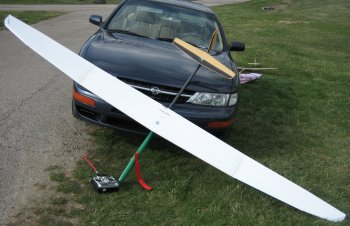
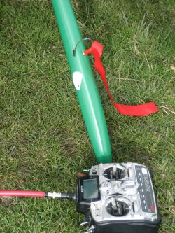

The Mantis has a long and storied history of evolution, perhaps best captured by Anker Berg-Sonne's "History of the Mantis", published in the December 2003 issue of the Radio Controlled Soaring Digest.
Originally designed by 2005 NATS Soaring champ Tom Kiesling in the early 1990s, the Mantis is truly a unique sailplane. Unique in design and in it’s evolution, it arose from a number of design suggestions from Mike Selig (designer of the SD series of airfoils) to help reduce drag and increase handling on sailplanes. After a number of iterations from Tom in the early-to-mid-1990’s, Phil Barnes began kitting Mantii in 1997 for Charles River RC members. These kits had the traditional Q-Tip style fuselage with V-tail surfaces and an SD7037 airfoil. Soon, the soaring community was abuzz with word of a revolutionary new sailplane being flown in the Northeast.
Since then, a number of redesigns has improved the Mantis, including new Aegea airfoils from Mark Drela, as well as the Terry Luckenbach fuselage that is more roomy and easier to put together. My model includes both of these improvements, and I have also converted my Mantis into a cross-tail with an all-flying elevator with a V-mount from Bud Elder.
The Aegea Mantis is the product of years of evolution and innovation from a number of very committed, passionate individuals. You can easily put a Mantis together for under $1000, and it will give you 95% the performance of a high-dollar molded ship.
 